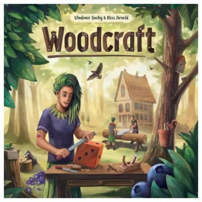

Woodcraft
- 1 – 4giocatori
La biblioteca lo sta catalogando. Fra poco sarà sullo scaffale.
Regolamento lungo e preparazione corposa. Si mette in conto la serata.
I vostri pezzi di legno sono dadi: li segate in due, li incollate insieme, li scartate se serve — e ogni taglio sbagliato è legno perso per sempre. Le azioni che nessuno sceglie diventano via via più convenienti, quindi anche aspettare, in questo gioco, è una mossa vera.
Si aggiustano i dadi lanciati per ottenere il risultato che serve, e si mandano i propri artigiani a occupare i posti disponibili prima degli altri — come essere i primi della fila.
Per chi vuole saperne di più
Tipologia
Manipolazione dadi · Gestione risorse · Piazzamento lavoratori
Cosa c'è nella scatola
1 plancia ruota principale · 4 plance giocatori · 1 tabellone segnapunti · 1 foglio aiuto effetti autori · 7 tessere azione · 8 tessere vaso · 12 tessere assemblaggio · 4 tessere incollaggio · 9 segnalini riutilizzo-tessera · 3 tessere tracciato reputazione · 12 tessere sega · 1 tessera ad arco · 1 carta primo giocatore · 55 segnalini attrezzo · 20 segnalini scarti di legno · 16 segnalini lama della sega · 16 segnalini colla · 16 segnalini lanterna · 1 indicatore del Round · 8 indicatori + 8 segnapunti per ciascuno dei 4 colori · 14 dadi per ciascuno dei 3 colori (verde, giallo, marrone) · segnalini mirtillo di vario valore (3/5/10) · 32 carte ordine inizio partita · 32 carte ordine partita inoltrata · 27 carte aiuto inizio partita · 22 carte aiuto partita inoltrata · 8 carte ordine nocciola · 8 carte contratti pubblici · 10 carte per il solitario · 1 regolamento